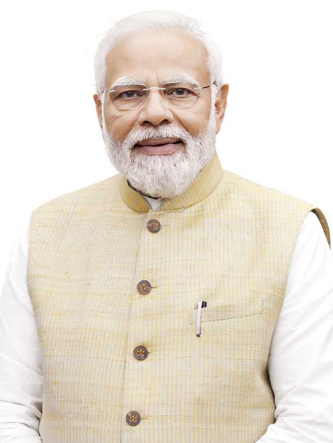
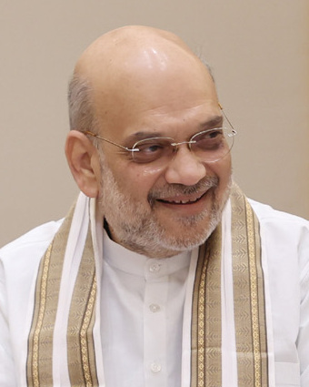
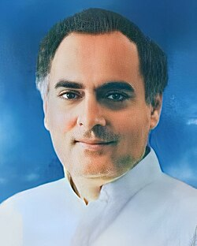
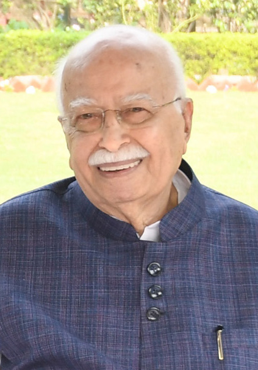
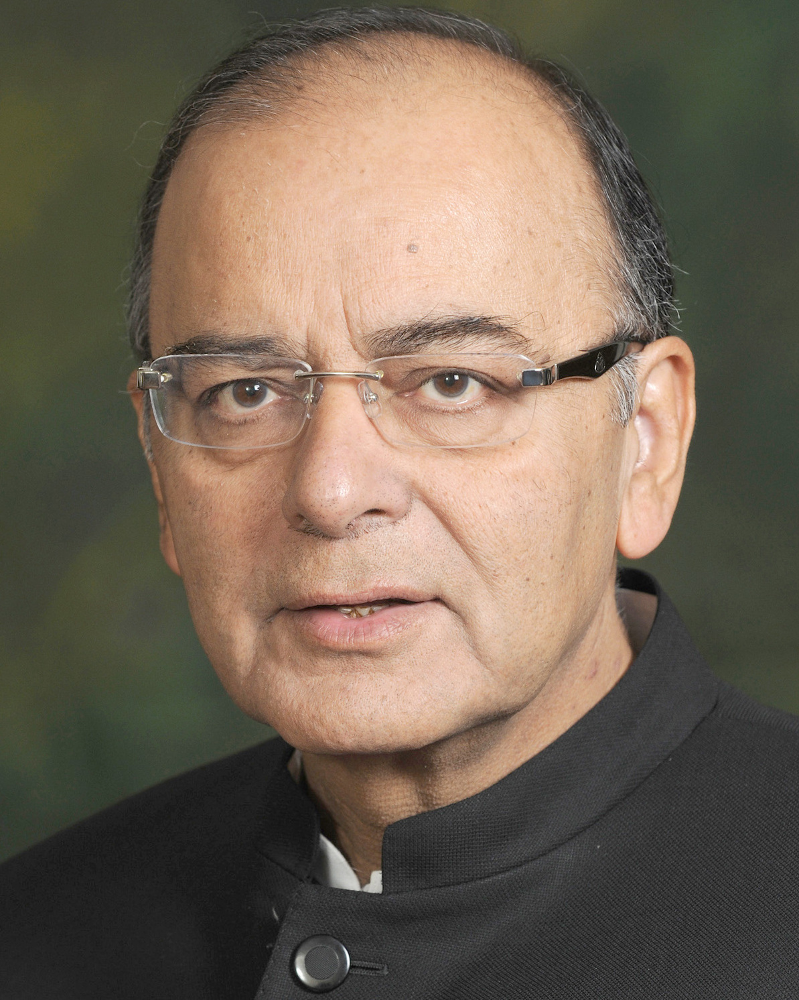
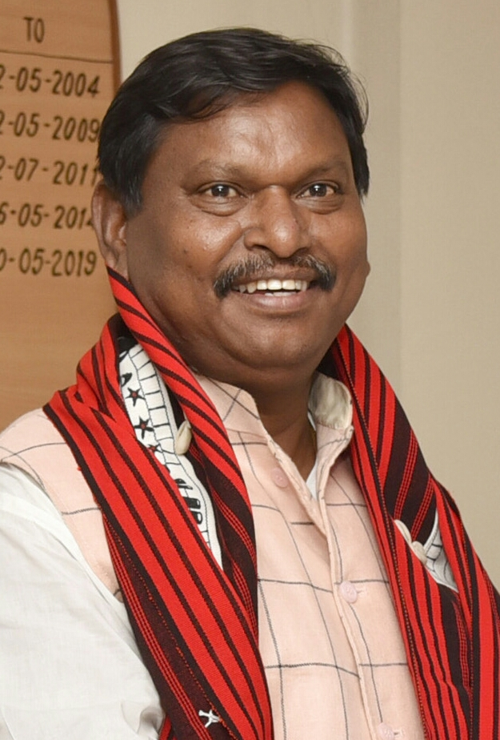

Legacy
Welcome to my Legacy — a living archive of the people who’ve shaped my life. From cherished friends to family legacy, this page is a curated reflection of my personal journey. Whether it’s the Hall of Fame of friendships, the Watch List of future allies, or a documented account of my family’s sociopolitical intersections — it’s all here.
Family Legacy

I come from a line of thinkers, reformers, and political activists. One key figure in my legacy is my grandfather, Dr. Gopesh Chandra Sarkar, whose life spanned academia, politics, and ideological work.

My paternal grandfather Dr. Gopesh Chandra Sarkar was:
- Ex-Reader at University College, North Bengal University
- BJP Lok Sabha candidate for the Raiganj Constituency during the 2009 Indian General Elections
- Former National Council Member of the BJP
- Former State Vice-President of the Bharatiya Janata Party (BJP) in West Bengal
- Former State Vice-President of the Jatiyatabadi Adhyapak O Gabeshak Sangha (ABRSM) in West Bengal
- Former Sanghachalak (President) of the Rashtriya Swayamsevak Sangh (RSS) in West Dinajpur District
- Former Sanghachalak (President) of the Rashtriya Swayamsevak Sangh (RSS) in Uttar Dinajpur District
- Former President of the Arya Sangha, founded by Swami Samadhi Prakash Aranya Maharaj
- Suffered Imprisonment in 1992, as the prime accused during the Ram Mandir Movement at Ayodhya in Uttar Dinajpur District, on false allegations of the leftist government in West Bengal.
Meanwhile, my maternal grandfather, Chandan Kumar Das, a dedicated RSS worker, fearlessly stood up against the Congress regime during the dark days of the Emergency in the 1970s. For daring to speak out against authoritarianism and defend democratic values, he was imprisoned—a mark of both his conviction and courage.
Political Intersections: Conversations Across the Spectrum
Through his work, my grandfather had interactions and dialogues — some brief, some recurring — with a wide range of Indian political and cultural figures. These meetings weren’t endorsements or deep friendships, but real moments of political intersection in India's recent history.
Connections with Politicians
The concept of "six degrees of separation" - the idea that any two people on Earth are six or fewer connections apart - finds real-world validation in my family's political journey. Through meaningful associations and public service, our lineage stands just two degrees removed from the highest office in India, exemplifying how proximity to leadership often grows from a legacy of commitment, ideology, and civic engagement.| Photo | Name | Known For | Connection |
|---|---|---|---|
 |
Narendra Modi | Prime Minister of India since 2014 | Second-degree connection via Shri Amit Shah, who shared the stage with my grandfather, Dr. Gopesh Chandra Sarkar, during election campaigning. Amit Shah is Modi’s closest political ally and strategist. This indirect link places our family two steps removed from the Prime Minister. |
 |
Droupadi Murmu | President of India since 2022 | My grandmother, Smt. Khela Sarkar shared a significant association with Smt. Sunita Haldekar, the All India Sampark Pramukh, who had the honor of meeting Droupadi Murmu, the current President of India. This connection places our family two steps removed from the President, underscoring our longstanding involvement in India’s political and social fabric. |
 |
Amit Shah | India's Union Home Minister and Minister of Cooperation in the Narendra Modi-led government | My grandfather, Dr. Gopesh Chandra Sarkar was on the stage with Amit Shah during his election campaigning as a VIP chief guest due to his position as the former BJP State Vice President. |
 |
Rajiv Gandhi | Prime minister of India from 1984 to 1989 | Eminent Congress leader Shri Shankar Chakraborty classmate and cordial friend of Dr.G.C.Sarkar, had regular meetups and connections with Rajiv Gandhi, the then prime minister of India. |
 |
L.K Advani | Deputy Prime Minister of India from 2002 to 2004 | Dr. Gopesh Chandra Sarkar, the BJP State Vice-President of West Bengal, went to receive L.K Advani at the Balurghat helipad, he had several meets and interactions with him including briefing him on the local issues of the state. |
 |
Arun Jaitley | Attorney and former Minister of Law and Justice of India | Dr. Gopesh Chandra Sarkar, the BJP State Vice-President of West Bengal, went to receive Arun Jaitley at the Balurghat helipad, he had several meets and interactions with him including briefing him on the local issues of the state. |
 |
Arjun Munda | Former Chief Minister of the Indian state of Jharkhand and the former Minister of Tribal Affairs and Minister of Agriculture and Farmers' Welfare in the Second Modi ministry. | Dr. Gopesh Chandra Sarkar, the BJP State Vice-President of West Bengal, went to receive Arjun Munda at the Balurghat helipad, he had several meets and interactions with him including briefing him on the local issues of the state. |
Fun Fact: During a train journey, my parents happened to cross paths with Smt. Venkatramaiah Shantha Kumari ("Shanthakka"), the current Pramukh Sanchalika (Chief) of the Rashtra Sevika Samiti, a prominent Hindu nationalist women’s organization. Initially, she didn’t recognize them - until they mentioned my grandmother, Smt. Khela (Jaya) Sarkar. Her eyes immediately lit up with recognition, and from that moment, the conversation flowed. Not only was a personal connection rekindled, but they were also extended hospitality and warmth through food and community service during the journey. It was a powerful reminder of how legacy builds unexpected bridges, even on a moving train.